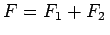

Inhalt Index DeskTop Bronstein

 Differentialgleichungen Gewöhnliche Differentialgleichungen Differentialgleichungen höherer Ordnung und Systeme von Differentialgleichungen Lineare Differentialgleichungen n-ter Ordnung
Differentialgleichungen Gewöhnliche Differentialgleichungen Differentialgleichungen höherer Ordnung und Systeme von Differentialgleichungen Lineare Differentialgleichungen n-ter Ordnung


Wenn y1 und y2 zwei Lösungen der Differentialgleichung (9.33) für verschiedene rechte Seiten F1 und F2 sind, dann ist ihre Summe y = y1 + y2 eine Lösung derselben Differentialgleichung mit der rechten Seite . Daraus folgt, daß es zur Berechnung der allgemeinen Lösung einer inhomogenen Differentialgleichung ausreicht, zu irgendeiner ihrer partikulären Lösungen die allgemeine Lösung der zugehörigen homogenen Differentialgleichung zu addieren.